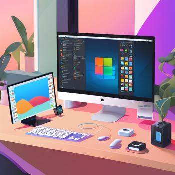

Olá! Me chamo
Moisés Fontana
Busco uma oportunidade de trabalhar como desenvolvedor web front-end. Tenho bons conhecimentos nas tecnologias HTML, CSS e JavaScript.
Me mantenho atualizado com as últimas tendências de mercado, sempre focado na experiência do usuário.
Atualmente estou estudando React e Tailwind CSS para criar interfaces modernas, responsivas e reutilizáveis.
Portfólio
Confira alguns dos projetos que desenvolvi recentemente em treinamentos realizados.
Sobre
Atualmente, sou bancário e busco uma transição de carreira para a área de desenvolvimento web front-end. Tenho grande interesse em explorar o mundo da tecnologia e em desenvolver soluções modernas e criativas para a web, com foco na experiência do usuário e em interfaces intuitivas.
Minha formação em Web Design e Programação é a base para essa jornada, complementada pelos cursos e treinamentos recentes que aprofundaram meu domínio em desenvolvimento front-end.
 Possuo conhecimentos avançados em sistemas Windows e sou familiarizado com ambientes Linux e MacOS, o que permite adaptar-me rapidamente a diferentes plataformas. Além disso, tenho um bom entendimento em bancos de dados relacionais como Microsoft SQL Server e Oracle DB.
Além das habilidades técnicas, valorizo muito a comunicação eficaz, o trabalho em equipe e a capacidade de pensamento crítico. Tenho facilidade para colaborar com colegas, e meu perfil é marcado pela proatividade, organização e comprometimento.
Tenho facilidade em resolver problemas, uma habilidade que considero essencial para o desenvolvimento de soluções eficientes e inovadoras na área de tecnologia. Gosto de abordar desafios com uma visão analítica e estratégica, explorando diferentes abordagens para encontrar as melhores soluções.
Contato
Você pode me contatar por meio de uma das redes sociais
abaixo.
Embora eu não poste com frequência, acompanho as atualizações
diariamente.